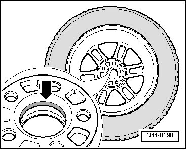

Procedures
Wheel Centering Seat, Protecting against Corrosion
Applies to Light Alloy and Steel Wheels
When a wheel is changed, the centering seat should be sprayed with Wax spray (D 322 000 A2).
In order to prevent corrosion between wheel centering seat and the wheel.
- Remove wheel.
- Thoroughly clean the centering seat on the wheel hub and the centering surface on the wheel.
- Apply wax in area of centering - arrow - using a brush.

Always make sure that only centering - arrow - is waxed and not rim contact surfaces. The result would be a poor braking performance.
CAUTION!
Wheel bolts, contact surfaces of wheel/wheel hub and the threads in the wheel hubs must not have wax applied to them. Never apply lubricants or anticorrosion treatment to threads in wheel hubs.
- Install wheel and tire. Refer to --> [ Wheel Bolts, Tightening Specification ] .